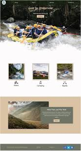

Overview
Purpose
The purpose of this rafting site is to serve as a comprehensive resource for whitewater rafting enthusiasts of all experience levels. It aims to provide detailed information on rafting trips, safety guidelines, equipment recommendations, and tips for planning memorable rafting adventures. By offering expert advice and up-to-date information, the site seeks to inspire and educate individuals to enjoy safe and exhilarating whitewater rafting experiences.
Audience
The target audience for this site includes:
- Novice Rafters: Individuals new to rafting looking for beginner-friendly trips, basic safety tips, and guidance on essential equipment.
- Experienced Rafters: Enthusiasts seeking advanced rafting locations, technical challenges, and in-depth information on high-adrenaline rafting experiences.
- Families: Families interested in safe, enjoyable, and kid-friendly rafting trips, complete with advice on planning family-oriented adventures.
- Outdoor Enthusiasts: People who enjoy outdoor activities and are looking to explore rafting as a new adventure, including those interested in multi-activity outdoor experiences.
Branding
Website Logo
Style Guide
Color Palette
Our color palette is designed to reflect the vibrant and natural environment associated with whitewater rafting. It includes a mix of cool and warm tones to create a visually appealing and engaging website. Here are the details:
- Primary Color: #396e94 (Deep blue representing water and trust)
- Secondary Color: #e7c24f (Golden yellow symbolizing energy and sunshine)
- Accent Color 1: #a43312 (Rich red for accents and emphasis)
- Accent Color 2: #381d2a (Dark brown to add depth and contrast)
- Palette URL: View on Coolors
Typography
The typography for the site combines modern sans-serif fonts with a classic serif font to ensure readability and add a touch of elegance:
- Headings: Roboto - A clean and modern sans-serif font used for headings to provide clarity and emphasis.
- Paragraphs: Open Sans - A widely used sans-serif font known for its readability and neutral appearance, perfect for body text.
- Callouts: Lora - A serif font used for quotes or highlighted text to give a distinct and elegant appearance.
Google Fonts Links: Roboto, Open Sans, Lora
Navigation
Wireframes
Home Page Wireframe

About Us Page Wireframe